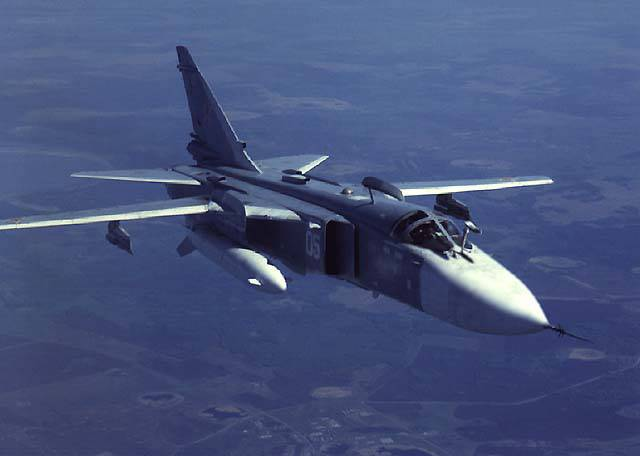

Су-24 (изделие Т-6, по кодификации НАТО: Fencer — «Фехтовальщик») — советский и российский тактический фронтовой бомбардировщик с крылом изменяемой стреловидности, предназначенный для нанесения ракетно-бомбовых ударов в простых и сложных метеоусловиях, днём и ночью, в том числе на малых высотах с прицельным поражением наземных и надводных целей. Носитель тактических ядерных зарядов. Немодифицированная версия самолёта снята с вооружения в 2016 году. Модифицированная версия Су-24М постепенно заменяется фронтовым бомбардировщиком Су-34 в частях ВКС России[2]. 